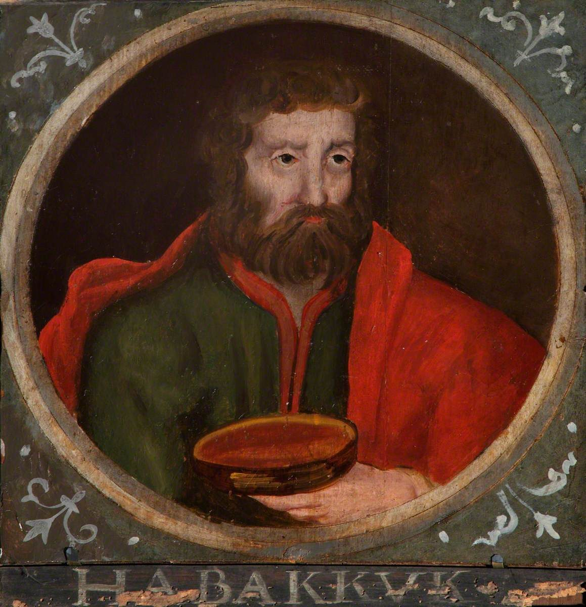

Habacuc 2 — La Traducción Mister

Habacuc 2. Un retrato del profeta de una serie pintada de Chastleton House, no una escena del capítulo: lo nombra y le pone en las manos un recipiente poco profundo que la imagen no explica. Lo más cercano en el capítulo es la copa de la diestra de Jehová (2:16), pero nada en la pintura dice que sea esa copa.
_School_-_The_Prophet_Habakkuk_-_1430496.24_-_National_Trust.jpg){kind=link}
Notas del traductor
⚠ El profeta se hace centinela. El capítulo 1 terminó con una pregunta suspendida en el aire (1:17), y este capítulo abre con el hombre que la hizo apostándose a esperar. Mishmeret es una guardia, el puesto que ocupa un centinela, y matsor es un lugar fortificado, una muralla o torre; la imagen es la de un vigilante que no dejará su puesto hasta que algo suba por el camino. A Habacuc no se le manda esperar. Decide hacerlo, y es una inversión callada: el que clamó «¿hasta cuándo?» ahora se queda quieto.
⚠ La última palabra del versículo no se deja fijar. Tochachti es el sustantivo tochachah, «reprensión, reproche, argumento», con mi pegado, y el sufijo puede apuntar a cualquier lado: la reprensión que yo he lanzado (mi queja) o la reprensión dirigida a mí. Los estantes se parten por la mitad. La RV60 «tocante a mi queja», la RV 1909 «mi pregunta» y la NVI «mi queja» leen la queja; la TNM 1987 «ante la censura para mí» lee la reprensión recibida, igual que la inglesa KJV «when I am reproved». Esta traducción imprime la segunda, que conserva la apertura del hebreo: haya que apuntar el sufijo adonde se apunte, el profeta espera oír cómo será recibida su queja.
«Lo que me dirá» es bi, literalmente «en mí», y los estantes lo toman de varios modos: la RV60 «lo que se me dirá», la RV 1909 «qué hablará en mí», la TNM 1987 «lo que él hablará por mí». La primera es el español más llano y no pierde nada que el hebreo exija.
⚠ La respuesta empieza con una orden de escribir. Antes de decir una sola palabra de lo que la visión es, Dios le dice al profeta cómo guardarla: ketov jazon, «escribe la visión», y jazon es el sustantivo de lo que el propio título del libro dice que Habacuc vio (jazah, 1:1). La visión que llegó como discusión ha de quedar asentada para sobrevivir a la discusión.
⚠ «Haz que quede clara» es un verbo con solo tres casas. Ba’er, hacer claro, es el verbo de dos versículos de Deuteronomio: Moisés «se dispuso a hacer clara esta instrucción» (1:5), y la ley ha de escribirse sobre las piedras del Ebal «con claridad y a fondo» (27:8); este versículo es el tercero y último. Las letras escriben también be’er, un pozo, y por eso una búsqueda consonántica devuelve docenas de versículos; solo estos tres son el verbo, leídos uno por uno. El verbo con que Moisés exponía la ley cae ahora sobre las tablas de un profeta. La RV60 y la RV 1909 «declárala en tablas», la NVI «grábala claramente en las tablillas», la TNM 1987 «ponla claramente sobre tablas».
«Las tablas» es ha-lujot, con artículo, el plural del sustantivo que nombra las tablas de piedra prometidas a Moisés en el Sinaí (lujot ha-even, Éxodo 24:12). El artículo puede significar solo «las tablas en que se escribe», y el hebreo no dice que sean aquellas; pero la palabra es la misma, y quien haya atravesado la Torá la oirá.
⚠ «Para que corra el que la lea» dice menos de lo que parece. El hebreo es yarutz qore bo, «corra el que lee en ella», y la oración no dice si el que corre es el lector o el mensajero. Hay tres lecturas en los estantes. El lector corre mientras lee, es decir, el mensaje es tan grande y claro que se capta a la carrera: la RV60 y la RV 1909 «para que corra el que leyere en ella», y la TNM 1987 «para que el que lea de ella en voz alta lo haga con afluencia». El lector corre con ella como heraldo: la inglesa NIV «so that a herald may run with it». O las dos cosas. La NVI «para que se lea de corrido» toma la primera. Esta traducción imprime el hebreo tal como está y no elige.
⚠ «Habla del fin y no miente»: un verbo de testigo. Yafeaj se apoya en puaj, «soplar, exhalar», y en otros lugares es lo que un testigo hace con su aliento: yafiaj. Ed emunim lo yejazzev, veyafiaj kezavim ed shaqer, Proverbios 14:5: el testigo fiel no miente, el testigo falso exhala mentiras; y Proverbios 12:17 tiene yafiaj emunah, «exhala fidelidad» (ninguno todavía en estas páginas). Habacuc usa el mismo par en el mismo aliento: la visión yafeaj y lo yejazzev, «no miente», y en el v. 4 llega la palabra emunah. La visión está descrita con el vocabulario de un testigo. La RV 1909 «mas al fin hablará, y no mentirá» lee el habla; la RV60 «se apresura hacia el fin, y no mentirá» y la TNM 1987 «sigue jadeando hasta el fin, y no dirá mentira» toman el aliento como el de un corredor, lo cual encaja con el correr del v. 2.
⚠ «El tiempo señalado» y la demora. La visión es todavía para el mo’ed, el tiempo señalado, rendición fija de esta traducción, y no se la apresurará. Yitmahmah, «se demora», es el verbo de Lot ante las puertas de Sodoma, que «se demoró» hasta que los hombres lo tomaron de la mano (Génesis 19:16). La orden que sigue son dos palabras, jakkeh lo, «espérala», y la promesa es un verbo doblado, bo yavo, «viniendo, vendrá». Hebreos 10:37 añade un artículo al griego de ese verbo doblado, de modo que la visión se vuelve una persona, «el que viene», y la nota de Hebreos 10 expone los tres cambios que el griego hace a estos dos versículos.
⚠ El versículo es un contraste, y su primera mitad es un verbo raro. «Mira: hinchada, no recta, está su alma dentro de él.» Upplah es el pasivo de ofal, hincharse; como verbo se halla en exactamente dos versículos de la Biblia hebrea, este y Números 14:44, donde Israel, mandado a volverse, «se lanzó» a subir el monte sin el arca. Las consonantes aparecen en dieciséis versículos, pero catorce son dos sustantivos, el Ofel, un montículo fortificado (el de Jerusalén en la mayoría de sus versículos), y los tumores de Deuteronomio 28 y 1 Samuel; se leyeron los resultados uno por uno. El alma hinchada es el mismo nefesh que se abrirá ancho como el Seol en el versículo siguiente y contra el cual peca el constructor del v. 10: el capítulo sigue una sola alma de la hinchazón al apetito y a la pérdida. La TNM 1987 «su alma se ha hinchado», la RV60 «se enorgullece», la NVI «el insolente no tiene el alma recta».
⚠ «Fidelidad» es el sentido de emuná, y los estantes están divididos. La palabra viene de aman, ser firme, la raíz de «amén», y significa firmeza antes que creencia. Su imagen más visible es Moisés en el monte de Refidim: cuando Aarón y Hur le sostuvieron las manos, «sus manos fueron emuná hasta que se puso el sol» (Éxodo 17:12), firmes, sin vacilar, todavía en alto. En Habacuc el versículo queda entre una visión que tarda (v. 3, «espérala») y un soberbio que no espera; el justo es aquel cuyas manos siguen en alto. La TNM 1987 «por su fidelidad seguirá viviendo» conserva la palabra; la RV60 «el justo por su fe vivirá», la RV 1909 «el justo en su fe vivirá» y la NVI «el justo vivirá por su fe» dan la forma conocida; la inglesa NIV «the righteous person will live by his faithfulness» vuelve a la fidelidad, mientras que la KJV «the just shall live by his faith» da la forma familiar.
⚠ Cuatro textos, cuatro pronombres. El hebreo tiene be’emunato, «por su fidelidad», la del propio justo. El Antiguo Testamento griego tiene «por mi fe» (ek pisteos mou), y las notas de Gálatas 3:11 y Hebreos 10:38 exponen lo que cada uno hace con ello: Pablo cita la línea sin pronombre alguno, en Gálatas 3:11 y en Romanos 1:17, y Hebreos pasa el «mi» al justo. Si «por la fe» va con «el justo» o con «vivirá» es una pregunta que el griego deja abierta y que el hebreo no plantea: el orden hebreo pone por su fidelidad antes de vivirá, y ese es el orden impreso aquí.
⚠ Un segundo lector antiguo. El comentario de los Rollos del Mar Muerto sobre Habacuc (1QpHab) cita, según las traducciones habituales, esta línea en la columna 7 y dice en la columna 8 que se refiere a quienes guardan la ley en la casa de Judá, a quienes Dios rescatará por su fatiga y su fe en el Maestro de Justicia. Así leída, la fidelidad es lealtad a una persona y a una comunidad. Pablo, en el siglo siguiente, lee las mismas cuatro palabras como el fundamento de pertenecer a Dios antes de la ley. La oración hebrea es lo bastante corta como para que ambos lectores hallaran dónde pararse.
El rollo aparta este versículo. Una pausa cerrada (setumah) cae justo después de él y cierra el primer discurso; los ayes empiezan tras la pausa.
⚠ «El vino traiciona» toma prestada la palabra del propio profeta. Boged, traidor, es la palabra de la acusación de Habacuc en 1:13, «¿por qué miras a los bogedim?»; la bebida es aquí un traidor como lo eran los caldeos. La TNM 1987 «el vino trata traidoramente», la NVI «el vino es traicionero», la RV60 «el que es dado al vino es traicionero». Los estudiosos informan de que el comentario de Qumrán tiene hon, «riqueza», donde el texto masorético tiene yayin, «vino», y de que la Septuaginta y la Peshita tampoco mencionan el vino; aquí se imprime la lectura masorética, y el hombre arrogante inestable por el vino encaja con las escenas de bebida del final del capítulo.
El hombre arrogante «nunca se asienta». Yahir, arrogante, altivo, se halla en dos versículos de la Biblia hebrea, este y Proverbios 21:24 («soberbio, altivo, burlador es su nombre»). Yinveh es la palabra más difícil, de navah, morar o estar en casa, y los estantes la toman de tres modos: la RV60 «que no permanecerá» y la RV 1909 «y no permanecerá» la leen como permanencia; la NVI «el soberbio no permanecerá» igual; la TNM 1987 «no alcanzará su meta». Esta traducción imprime «nunca se asienta», que retiene lo primero.
⚠ Un apetito ancho como el Seol, y otra vez la red del capítulo 1. El hombre «ha abierto ancho su nefesh» como el Seol: las mismas dos palabras que Isaías 5:14 pone al revés, hirjivah she’ol nafshah, «el Seol ha abierto ancho su apetito». Nefesh es el alma que se hinchó en el v. 4 y también la garganta y el hambre; el soberbio es una garganta. Y «reúne para sí a todas las naciones» es va-ye’esof, el verbo de la red de 1:15, donde el pescador «las junta en su barredera». La TNM 1987 «ha hecho espaciosa su alma justamente como el Seol», la RV60 «ensanchó como el Seol su alma», la RV 1909 «ensanchó como el infierno su alma», la NVI «ensancha su garganta como el sepulcro».
⚠ Tres palabras para una burla. Mashal, melitsah, jidot: un proverbio, una burla, enigmas. Proverbios 1:6 enumera las mismas tres entre las herramientas de la sabiduría, «para entender el proverbio y el dicho figurado, las palabras de los sabios y sus enigmas» (el «dicho figurado» allí es melitsah), y aquí el mismo equipo se vuelve una befa. Lo que dicen es un hoy, un ay, y el ay abre una lista: el capítulo tiene cinco, en los vv. 6, 9, 12, 15 y 19. Y dentro del primero las víctimas hacen una pregunta: ad-matai, «¡hasta cuándo!» No es el ad-aná del propio Habacuc en 1:2, pero es la misma pregunta, ahora en boca de los despojados.
«Deudas» es una sola palabra, hallada una vez. Avtit está solo en este versículo. Una lectura tradicional la divide en av-tit, «barro espeso», y la RV 1909 «espeso lodo» lo sigue; la RV60 «prenda tras prenda», la NVI «acumula prendas empeñadas» y la TNM 1987 «haciendo pesada la deuda contra sí mismo» la leen del verbo avat, tomar en prenda, como en Deuteronomio 15:6, donde Israel «prestará a muchas naciones» con un verbo de la misma raíz, el verbo del que toma en prenda. Avtit se imprime como deudas porque el versículo siguiente trae a los prestamistas.
⚠ «Los que te muerden». Noshekhekha es el participio de nashakh, morder, y el sustantivo de esa raíz es neshekh, interés, que la ley prohíbe cobrar a un hermano (Deuteronomio 23:20). El profeta juega con un acreedor y una serpiente, y el español tiene que elegir. La RV 1909 «los que te han de morder» guarda al animal; la RV60 «tus deudores», la NVI «tus acreedores» y la TNM 1987 «los que demandarán de ti interés» guardan la deuda; esta traducción imprime la mordedura y confía en que el lector oiga la deuda. El verbo que sigue, mezaz’ekha, «los que te sacuden con violencia», es la otra mano de los acreedores.
Despojo por despojo. Shalota y yeshaluka son un solo verbo a ambos lados de la oración, «tú despojaste … te despojarán», y ese cognado se conserva. Yeter es «lo que sobra»: todos los pueblos que el conquistador dejó en pie. Luego la línea que cierra el primer ay: mi-dmei adam va-jamas-eretz, qiryah ve-jol-yoshvei vah, «por la sangre de la humanidad y la violencia hecha a la tierra, a la ciudad y a todos los que viven en ella». Es jamas, la violencia que llenó la tierra antes del diluvio y de la que Habacuc acusó a su propio Judá en 1:2, y volverá palabra por palabra en el v. 17.
Las pausas del rollo. Después de este ay cae una pausa abierta (petujá), y las pausas masoréticas del capítulo caen luego tras los vv. 11, 14, 18 y 20, cada vez al final de un veredicto de cierre: la piedra que grita, la tierra llena de conocimiento, el ídolo que no da provecho, la tierra hecha callar.
⚠ «Obtiene mala ganancia» es una frase propia de los proverbios. Botse’a betsa es el par cognado que Proverbios usa para el hombre que gana cortando: «tales son las sendas de todo el que codicia ganancia: le quita el alma a sus dueños» (Proverbios 1:19), y Proverbios 15:27 tiene las mismas dos palabras con una casa dentro: okher beito botse’a betsa, «el que obtiene ganancia turba su propia casa». La frase de Habacuc cae en medio: la ganancia es «para su casa», y el veredicto, en el v. 10, es vergüenza «para tu casa». La RV60 «codicia injusta ganancia para su casa», la NVI «llena su casa de ganancias injustas».
⚠ El nido en alto es de Edom. Lasum bamarom qinno, «poner en alto su nido», es casi la frase de Abdías 4, donde a Edom se le dice que si pone su nido entre las estrellas, «de allí te haré descender». El hombre que quiere ser «librado de la garra del mal» construyendo en alto es el morador de los riscos de Abdías, y la misma respuesta lo espera.
«Pecas contra tu propia alma». Jote nafshekha es la tercera vez que el capítulo gira sobre nefesh: hinchada (v. 4), abierta ancha como el Seol (v. 5), y ahora perdida. Jata es el verbo de pecar, y también de errar el blanco; el hombre que aconsejó vergüenza para su casa ha errado su propia vida. La RV60 y la RV 1909 «has pecado contra tu vida», la TNM 1987 «tu alma está pecando», la NVI «causaste tu propia desgracia». Qetzot ammim rabbim, «cortando a muchos pueblos», puede leerse también «los confines de muchos pueblos»; el sentido verbal es el que toman las traducciones.
⚠ La piedra grita, y la viga responde. Tiz’aq, «gritará», es el verbo de la propia queja del profeta en 1:2, ez’aq elekha jamas, «grito a ti ‘¡Violencia!’» —y lo que oía de vuelta era «no oyes». Ahora la casa misma grita con el mismo verbo, y algo sí responde: ya’anenah, el verbo de la primera línea de la respuesta de Dios en el v. 2. El grito del muro no es la sangre de Abel clamando desde la tierra (Génesis 4:10 usa otro verbo, tsa’aq), pero es su pariente más cercano: un clamor de los agraviados, dado ahora a los materiales de la casa. Kafis, la «viga», está solo en este versículo; los estantes la dan como viga o como la madera misma: RV60 y RV 1909 «la tabla del enmaderado le responderá», NVI «resuenan las vigas del enmaderado», TNM 1987 «una viga misma le responderá».
Lucas da a las piedras otro grito. En Lucas 19:40 Jesús responde a los fariseos que quieren callar a sus discípulos: si ellos callaran, las piedras gritarían. En Habacuc las piedras testifican contra un hombre que edificó su casa sobre la violencia; en Lucas testificarían a favor del que viene en nombre de Jehová. La imagen es la misma y el veredicto se invierte.
⚠ La línea de Miqueas, con la ciudad sin nombre. Boneh ir bedamim, vejonen qiryah be’avlah, «edifica una ciudad con sangre, y funda una villa sobre la injusticia», es casi palabra por palabra Miqueas 3:10, boneh Tsiyon bedamim, vi-Yerushalayim be’avlah, «los que edifican Sión con sangre y Jerusalén con injusticia». Miqueas nombra la ciudad; Habacuc, con los caldeos a la vista, la deja sin nombre, y la ciudad sin nombre es lo bastante grande para ser Babilonia o Jerusalén. Damim es el plural de dam, sangre, y en este sentido significa derramamiento de sangre. La RV60 «edifica la ciudad con sangre, y … funda una ciudad con iniquidad», la RV 1909 «funda la villa con iniquidad», la NVI «construye una ciudad con sangre y establece un poblado con maldad».
⚠ «¿No viene de Jehová de los ejércitos?»: el trabajo del imperio se va en humo. El hebreo tiene yig’u ammim bedei-esh, ul’ummim bedei-riq ye’afu, «los pueblos se afanan bedei fuego, y las naciones bedei nada se cansan». Dei es «bastante»: se afanan solo cuanto el fuego necesita, por nada más que combustible. La línea vuelve en Jeremías 51:58 con sus dos mitades cambiadas, bedei-riq … bedei-esh, y allí el fuego es el de la propia Babilonia, la ancha muralla arrasada y las altas puertas quemadas. La TNM 1987 «los pueblos hayan de afanarse solo para el fuego», la RV60 «trabajarán para el fuego», la NVI «el trabajo de los pueblos sea solo leña para el fuego». La palabra hinneh («mira») vuelve la oración un dedo que apunta, y apunta a Jehová de los ejércitos: el afanarse de las naciones por el fuego no es un accidente del imperio sino algo hecho bajo su mano.
⚠ El versículo que llena la tierra. Ki timmale ha’aretz lada’at et-kevod Yehovah, kamayim yekhassu al-yam: «la tierra se llenará del conocimiento de la gloria de Jehová, como las aguas cubren el mar». Dos versículos anteriores están dentro. En Números 14:21, tras la rebelión de los espías, las palabras vivo yo se unen a la gloria de Jehová que llena toda la tierra; llega en el peor momento del desierto y promete lo contrario de su ruina. E Isaías 11:9 (ya en estas páginas) tiene la tierra está llena del conocimiento de Jehová, como las aguas cubren el mar. Habacuc junta la gloria, el conocimiento y el agua, y los pone en medio de cinco ayes contra un imperio sangriento. El hebreo tiene un infinitivo, «llena para conocer», de modo que la tierra se llena a fin de conocer la gloria (kavod, peso); el conocimiento (da’at) es la palabra que usa Isaías. La TNM 1987 «se llenará de conocer la gloria de Jehová», la RV60 «será llena del conocimiento de la gloria de Jehová, como las aguas cubren el mar», la NVI «así como las aguas cubren los mares».
⚠ El borracho, descubierto. Noé «bebió del vino y se embriagó, y se descubrió dentro de su tienda» (Génesis 9:21), y lo que hizo su hijo al verlo es la historia. El ay de Habacuc es sobre un hombre que monta la escena: da de beber a su prójimo, lo emborracha, «para mirar la desnudez de ellos» (me’oreihem, forma hallada solo en este versículo). La gramática pasa de «él» a «ellos» a mitad de la oración, y la traducción no lo alisa. La RV60 «para mirar su desnudez» y la NVI «para contemplar su cuerpo desnudo».
⚠ «Tu veneno» es la palabra de la ira. Jamatkha es jemah, calor, furia, y también veneno: en el Cántico de Moisés el vino de los malvados «es veneno de serpientes» (jamat) (Deuteronomio 32:33). El hombre no solo vierte vino; vierte en él su propia furia. Los estantes no concuerdan en qué: la RV60 «le acercas tu hiel», la NVI «derramas tu veneno», la TNM 1987 «juntando a ello tu furia y cólera», mientras que la inglesa KJV «puttest thy bottle to him» y la NIV «pouring it from the wineskin» leen un odre o frasco en vez de ira. Veneno se imprime porque lo respalda el Cántico de Moisés y el contexto es una bebida envenenada.
⚠ «Saciado de deshonra en vez de gloria»: peso y ligereza. Qalón, deshonra, se apoya en qalal, ser ligero, y se opone a kavod, gloria, que se apoya en kaved, pesado. El versículo cambia un nombre pesado por uno ligero. Luego la oración gira sobre el propio borracho: shteh gam-atta ve-he’arel, «¡bebe tú también, y muéstrate incircunciso!» Arel es la palabra que los libros de Jueces y Samuel usan para los filisteos, el vecino que no practicaba la circuncisión, y la orden es quedar expuesto como exactamente eso. La RV60 y la RV 1909 «bebe tú también, y serás descubierto», la NVI «muestra tu desnudez», la TNM 1987 «que se te considere incircunciso». Los estudiosos informan de que el comentario de Qumrán (columna 11) cita la palabra como ve-hera’el, «y tambaleéate», con dos letras transpuestas, y de que la Septuaginta lee «sé sacudido y tiembla»; aquí se imprime la lectura masorética, y el tambaleo es el sentido que confirma la cláusula siguiente.
⚠ La copa da la vuelta. Kos yemin Yehovah, «la copa de la diestra de Jehová», tissov alekha, va girando, como pasa una copa en una mesa, hasta llegar al que se la pasó a otros. Es la copa de Jeremías 25:15, la copa del vino de furia (ha-jemah) que a Jeremías se le manda dar a beber a todas las naciones; en 25:27 se les dice que beban, y se embriaguen, y vomiten (uqyu), y caigan. La copa que el conquistador ebrio obligó a beber a sus vecinos se ha vuelto la copa que Jehová le pasa a él.
⚠ «Vómito de vergüenza» es una palabra hallada una vez. Qiqalón está solo en este versículo. Es qi, vómito, más qalón, vergüenza (palabra de borracho, como en Jeremías 25:27 arriba e Isaías 28:8, «todas las mesas están llenas de vómito»), o bien qalón duplicado por énfasis, «vergüenza sobre vergüenza». Dos versiones del estante español leen el vómito: la RV60 y la RV 1909 «vómito de afrenta»; la NVI «una desgracia» y la TNM 1987 «vergüenza» leen solo la vergüenza. La palabra está colocada para responder a «saciado de qalón» al comienzo del versículo, y en un capítulo de bebida el vómito es el sentido más probable.
⚠ El Líbano, y una línea dicha dos veces. Jamas Levanon, «la violencia hecha al Líbano», es una tala: el Líbano es la tierra del cedro, la madera cortada para el templo de Salomón (1 Reyes 5), y la violencia hecha a él es la tala de sus bosques. El verbo es yekhasekha, «te cubrirá», el mismo verbo de las aguas que «cubren» el mar en el v. 14: el conocimiento de Dios cubre la tierra como el agua, y la violencia que el imperio ha hecho cubre a quien la hizo del mismo modo. La segunda mitad, yejitan, es ambigua en su pronombre: «las aterrará a ellas», las bestias que el imperio cazaba (la RV60 «la destrucción de las fieras te quebrantará» lee el pronombre como «te»; la TNM 1987 «las bestias que los aterra»), o «te aterrará a ti» (la NVI «¡Que te abata la destrucción que hiciste de los animales!»). Y la línea que cierra el v. 17 es la que cerró el v. 8, palabra por palabra: mi-dmei adam va-jamas-eretz, qiryah ve-jol-yoshvei vah. El refrán de los vv. 8 y 17 encierra los tres ayes que hay entre ellos.
⚠ El ídolo es un maestro. Moreh sheqer, «maestro de mentira», se apoya en la raíz de torah, «enseñanza», y el versículo siguiente pregunta hu yoreh, «¿puede enseñar?» La pregunta cae donde el capítulo 1 dejó una herida: allí, «la ley se entumece» (1:4); aquí, el maestro de la nación es un bloque tallado y fundido. La RV60 «la estatua de fundición que enseña mentira», la TNM 1987 «un instructor de falsedad», la NVI «tan solo enseña mentiras»; y en el v. 19 la RV60 «¿Podrá él enseñar?» y la TNM 1987 «Ella misma dará instrucción».
⚠ «El artífice confía en lo que hizo»: dos palabras de un mismo verbo. Yotser yitsro es un juego: el que forma confía en lo que ha formado. Yatsar es el verbo del alfarero, y el verbo que formó al ser humano del polvo de la tierra (Génesis 2:7), donde lo siguiente que Dios hace es soplar. El que fabrica el ídolo usa el mismo verbo y no puede hacer lo siguiente: el v. 19 termina en ruaj, «aliento», y dice que no lo hay en él.
«Dioses sin valor que no pueden hablar». Elilim illemim es un juego de sonido en toda la frase. Elil es una cosa sin valor, una nada, y suena como elohim, «dioses»; illem es mudo. Los estantes: la RV60 «imágenes mudas», la TNM 1987 «dioses que nada valen y que no pueden hablar», la NVI «ídolos que no pueden hablar».
Despertar un bloque de madera. Haqitsah, «¡despierta!», es del verbo del v. 7, donde los acreedores «se despiertan» solos (ve-yiqtsu). El dios de madera tiene que ser despertado por un hombre que luego espera que enseñe. Y tafus zahav vajesef, «chapada de oro y plata», dice que el dios es un revestimiento sobre un núcleo sin aliento.
⚠ «Silencio»: el silencio de la piedra y el silencio de la tierra. El ídolo es dumam, piedra callada, y la última línea manda callar a toda la tierra. Has es el silencio seco que uno dice con un dedo en los labios, y se halla como interjección suelta en seis versículos de la Biblia hebrea, tres de ellos profetas mandando callar ante Jehová: este, Sofonías 1:7 («¡Silencio ante el Señor Jehová! Porque cercano está el día de Jehová») y Zacarías 2:17 («Calle toda carne delante de Jehová», con la misma palabra). Los otros son el rey de Jueces 3:19, que saca a sus asistentes de la sala antes del mensaje secreto del asesino, y Amós 6:10 y 8:3. Dos silencios quedan lado a lado: un bloque que no puede hablar, y un mundo al que se manda detenerse. La TNM 1987 «¡Guarde silencio delante de él, toda la tierra!», la RV60 «calle delante de él toda la tierra».
Jeikhal, «templo», es también la palabra para un palacio. La línea dice que Jehová está en su jeikhal qodsho, su santo palacio, y la imagen es una sala del trono cuyas puertas acaban de abrirse. El templo de Jerusalén estaba en pie cuando Habacuc escribió (el primer templo), y los ejércitos caldeos del capítulo 1 estaban en camino.
Patrones que vale la pena recordar
Dónde esta traducción mantiene las palabras exactas / distintas: «haz que quede clara» para ba’er (v. 2), el verbo del discurso de Moisés y de las piedras del Ebal; «el tiempo señalado» para mo’ed (v. 3); «hinchada» para upplah (v. 4), el alma hinchada de Números 14:44; «fidelidad» para emuná (v. 4), la firmeza de las manos alzadas de Moisés; «alma» para nefesh en los vv. 4 y 10, con el apetito del v. 5; «los que te muerden» para noshekhekha (v. 7), el acreedor-serpiente; «despojar / te despojarán» para shalal conservado como un solo verbo (v. 8); «violencia» para jamas (vv. 8, 17); «cubrir» para kasah (vv. 14, 17); «ay» para hoy en sus cinco giros (vv. 6, 9, 12, 15, 19); «maestro de mentira» y «¿puede enseñar?» para moreh y yoreh (vv. 18–19); y «silencio» para has (v. 20).
Ecos pagados. La pregunta que quedó colgando al final del capítulo 1 tiene ahora a un centinela esperando su respuesta. Boged, «traidor», de 1:13, ahora el vino; el asaf de la red de 1:15, ahora el apetito que reúne a todas las naciones; el ez’aq del profeta en 1:2, ahora la piedra del muro; la torah entumecida de 1:4, ahora un ídolo llamado maestro. De libros anteriores: el ba’er de Deuteronomio 1:5 y 27:8; el verbo de Números 14:44 puesto frente a emuná; la gloria que llena la tierra en Números 14:21; el nido en alto de Abdías 4; la ganancia que quita la vida a sus dueños en Proverbios 1:19; la mordedura de Deuteronomio 23:20; la tienda de Noé en Génesis 9:21; el veneno de Deuteronomio 32:33; la copa de Jeremías 25; el silencio de Sofonías 1:7 y Zacarías 2:17; y las tres citas del Nuevo Testamento en Romanos 1:17, Gálatas 3:11 y Hebreos 10:38, con las piedras de Lucas 19:40.
Ecos plantados. El capítulo 3, la oración de Habacuc, que dice «Jehová, he oído tu fama, y temo» y termina con el profeta de pie en la oscuridad ante una higuera sin fruto, regocijándose igual. Miqueas 3:10, la ciudad edificada con sangre; Jeremías 51:58, los pueblos que se afanan para el fuego; Isaías 11:9, el conocimiento de Jehová como las aguas cubren el mar; Isaías 5:14, el Seol que abre ancho su apetito; Amós 6:10 y 8:3, el otro «silencio»; y Proverbios 14:5 con su testigo fiel que no miente.